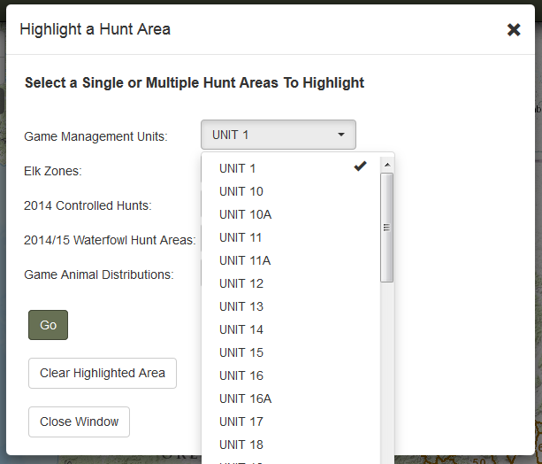
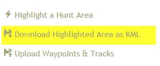
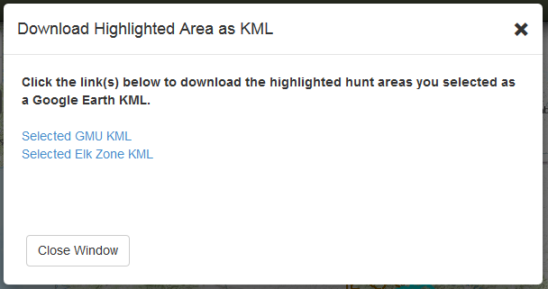

DOWNLOAD HIGHLIGHTED AREA AS KML
After a hunt area or multiple hunt areas from dropdowns in the 'Highlight a Hunt Area' window are selected, this tool will appear. Simple open the tool to see hyperlinks that will allow you to download/open a Google Earth KML of the hunt areas highlighted.
Select hunt areas:

Download Highlighted Area as KML tool will appear in the sidebar and be highlighted for a short time:

Open the tool and click the hyperlinks to download/open the KMLs:

Created with the Personal Edition of HelpNDoc: Full-featured Help generator